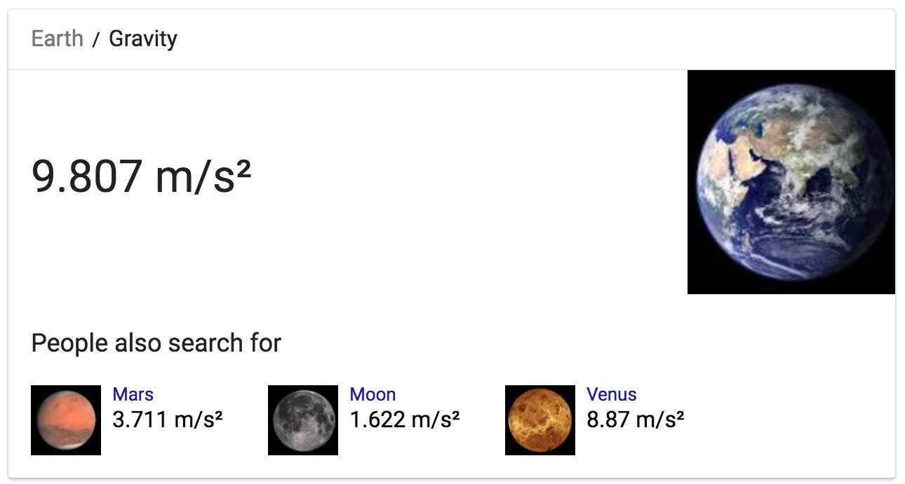

The object of Autodrone is to program a drone to put out wildfires. But before we start programming drones, let’s play the game with manual controls. Use the arrow keys to control the drone’s flight, and press space to drop water balloons. Land the drone once you’ve put out all the fires. Then, scroll down to learn how to program the drone.
This section presents a very simple program for the drone. All, you do is type in thrustUp = 15 meters/second^2 in the code editor beneath the game. Then hit play. (Well, you’ll see I already typed it in for you.)
So what’s going on here? A “tick” occurs every thirtieth of a second. And on every tick the drone executes the program, as written in the code editor.
The point of the program is to assign values to the drone, which determines the drone behavior.
In this example, the drone continually assigns the value 15 meters/second^2 to the variable named thrustUp. Thus, according to this program, thrustUp is always set to 15 meters/second^2.
The thrustUp value determines how much upward thrust the drone creates by spinning its blades.
Explore other values for thrustUp to see how it effects drone behavior.
Let’s determine the minimal amount of upward thrust needed for the drone to overpower gravity. (This will come in handy for Section 3.)
We know that 15 meters/second^2 is sufficient, so let’s see if 7.5 is sufficient (half of 15).
7.5 doesn’t generate enough thrust to overcome gravity. So now let’s try 11.25, the midpoint between 7.5 and 15
11.25 is sufficient. Let’s try 9.36 the midpoint between 7.5 and 11.25
9.36 is not sufficient. Let’s try 10.31 the midpoint between 9.36 and 11.25
10.31 is sufficient. Let’s try 9.86 the midpoint between 9.36 and 10.31
9.86 is sufficient. Let’s try 9.61 the midpoint between 9.36 and 9.86
9.61 is not sufficient. Let’s try 9.76 the midpoint between 9.61 and 9.86
9.76 is not sufficient. Let’s try 9.81 the midpoint between 9.76 and 9.86
9.81 is sufficient. Let’s try 9.79 the midpoint between 9.76 and 9.81
9.79 is not sufficient. Let’s try 9.80 the midpoint between 9.79 and 9.81
9.80 is not sufficient!!! Therefore, 9.81 is the minimal thrust needed to overcome gravity!!! (If we're measuring to two decimal places)
We can stop searching now because we know 9.80 is insufficient and and 9.81 is insufficient, therefore the minimal thrust needed to overcome gravity is somewhere between 9.80 and 9.81. (If we wanted to, we could do the same search but to three decimal places and find a more precise answer)
The technique we used to find 9.81 is called “binary search.” The Wikipedia page for binary search does a great job of obscuring the simplicity of the algorithm. Here’s a better article by Business Insider.
We could have just googled: “gravity on Earth”:

We would like our drone to hover at an altitude. But first, let’s look at an oscillating drone:
Every tick, the drone checks its altitude. If the altitude is less than 6, then it sets the thrust to 15. If the altitude is greater than (or equal to) 6, then the program sets the drone’s thrust to 0.
Why does this result in oscillating behavior?
The program below is perfectly valid, although it’s kind of silly.
In the above program, whenever the altitude is greater than (or equal to) 6 meters, then the then component does not get executed. In this case, the thrustUp variable is not updated. And since it’s not updated, it retrains its previous value from the previous tick.
Thus, in this program, thrustUp will always be set to 15.
Here’s a drone that takes off, then hovers at altitude:
How does it work? Once the drone reaches an altitude above 6 meters, it oscillates between two different thrusts, depending upon the speed of the drone.
If the drone is moving upward (i.e. has an positive speed going upward) then the drone needs to drop down—but only a little, and only gently. We don't want the drone to fall down much, because then the altitude won't be stable.
Similarly, if the drone is moving downward, then the drone needs to fly upward—but only a little, and only gently.
Vertical stability is sensitive the various values of thrust you specify in the program:
Try out different thrust values in the program for Section 3.3, to see how bad values for thrust result in undesirable behavior.
Now that we have a drone that is vertically stable, it is time to make it fly horizontally so it can fly over the fires. (In Section 5, we will program the drone to drop water balloons on the fires.)
We added the following code right after the vertical stabilization component:
if (speedRight < 1 meters/second) {
thrustRight = 1.0 meters/second^2
} else {
thrustRight = 0.0 meters/second^2
}
The reason we set thrustRight = 0.0 when the speed is above 1, is because the drone coasts like a hockey puck through the air. I.e., once the desired speed is reached, we cut the rightward thrust, and let the drone coast.
In the real world, air drag would slow rightward speed, but I have not programmed air drag into the game.